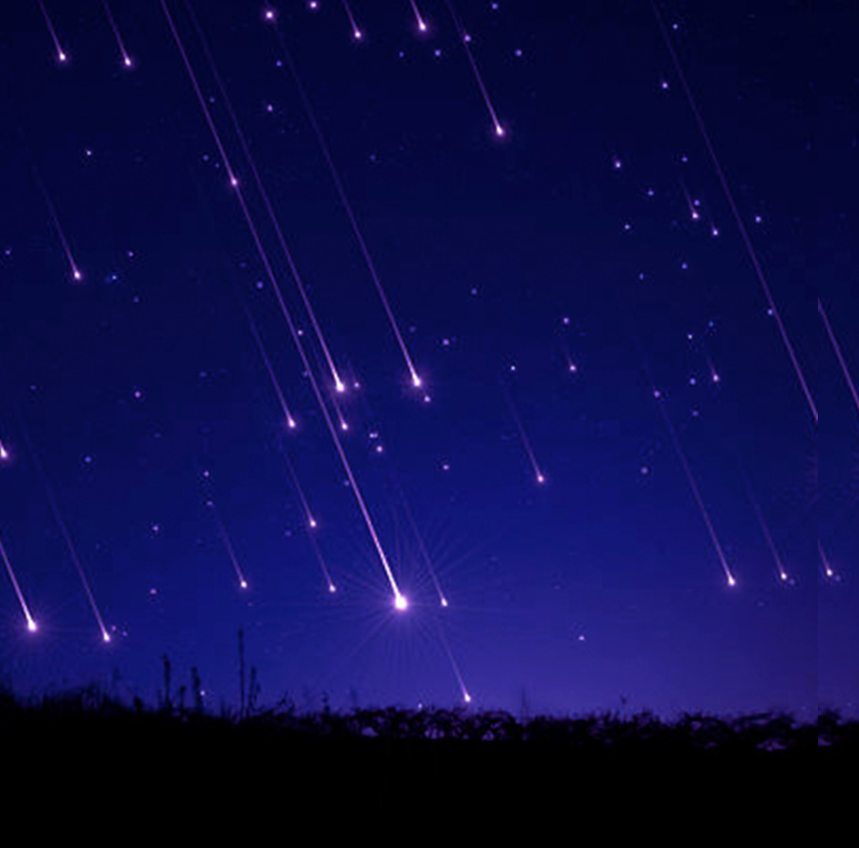
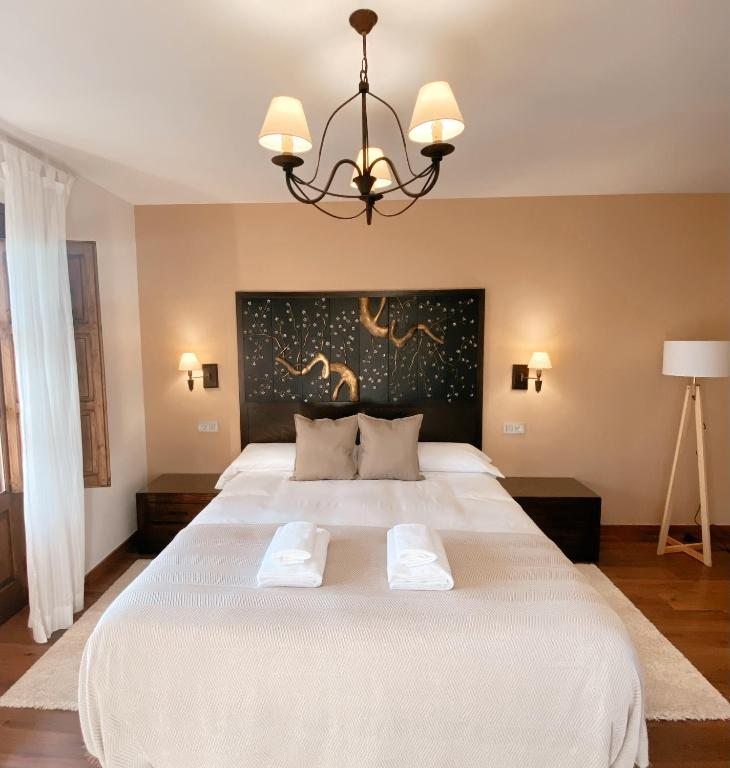

Lluvia de estrellas
Descripción
Un viaje astronómico y natural en el norte de España. Dos días y una noche.
En esta experiencia, el destino estará centrado en la observación de la lluvia de estrellas más
famosa del año, las Perseidas, un fenómeno astronómico que ocurre cada verano cuando la Tierra
atraviesa restos del cometa Swift–Tuttle. El viaje está diseñado para aprender a identificar el
cielo nocturno y comprender la relación entre la astronomía y la naturaleza en un entorno libre de
contaminación lumínica.
En el viaje se realizará una observación guiada del cielo nocturno, aprendiendo a localizar
constelaciones, comprender el origen de las “estrellas fugaces” y disfrutar del fenómeno en su punto
máximo de actividad.
Durante la experiencia se viajará en tren hacia una zona elevada y oscura del norte de España, en plena Sierra de Gredos (Ávila), uno de los lugares más recomendados por su baja contaminación lumínica y cielos despejados para la observación astronómica.
Estadía en : alojamiento rural en la Sierra de Gredos, en un pequeño pueblo de montaña con cielos oscuros certificados y acceso directo a zonas de observación.
Precio del viaje : 210 € por persona. Incluye billetes de tren ida y vuelta, una noche de alojamiento rural, desayuno, guía astronómico especializado y actividad nocturna de observación de las Perseidas.
No te lo pierdas
Las Perseidas alcanzan su máximo de actividad en la noche del 12 al 13 de agosto de 2026, momento en el que se pueden observar decenas de meteoros por hora en condiciones óptimas.
Itinerario
>Día 1 - Llegada a Puerto de Béjar y alojamiento rural
Instalación en Hotel Rural Candela y Plata · 15:00 - 20:30
La experiencia comienza con la llegada a Puerto de Béjar y el check-in en el Hotel Rural Candela y Plata, un alojamiento de 3 estrellas rodeado de naturaleza. El hotel cuenta con habitaciones con aire acondicionado, baño privado, wifi gratuito, piscina exterior de temporada, sauna, bar y zonas comunes como jardín, salón y terraza.
Las habitaciones están equipadas con escritorio, TV de pantalla plana, cafetera y ropa de cama completa, y algunas disponen de balcón o vistas a la piscina. Tras la instalación, los viajeros dispondrán de tiempo libre para descansar, disfrutar del entorno rural o relajarse en las instalaciones del hotel.

Día 1 - Noche - Observación del cielo estrellado en la sierra
Noche · Observación del cielo estrellado en la sierra
Al caer la noche, se realizará una salida guiada para la observación del cielo estrellado en un entorno natural de baja contaminación lumínica. La sierra de Béjar ofrece condiciones ideales para contemplar constelaciones, la Vía Láctea y fenómenos astronómicos visibles a simple vista.
Durante la actividad, un guía especializado explicará conceptos básicos de astronomía y orientación celeste, combinando ciencia y la experiencia del cielo nocturno en plena naturaleza.

Día 2 - Desayuno, descanso y regreso
Cierre de la experiencia · 08:30 - 13:30
La mañana comienza con el desayuno en el hotel y tiempo libre para disfrutar de las instalaciones, dar un último paseo por el entorno natural o relajarse antes del regreso.
Posteriormente se realizará el check-out y el traslado de vuelta, finalizando la experiencia rural y astronómica en la Sierra de Béjar.


Nota importante: Los programas descritos son susceptibles de cambios por razones puntuales ajenas a nuestra organización, tales como condiciones meteorológicas o de seguridad.
Observaciones
- Si alguien tiene alergia o intolerancia a algún tipo de alimento deberá comunicarlo a la agencia para prever incidentes inesperados que cundan el panico.
- Si alguien tiene algún tipo de enfermedad que afecte a la respiración, resistencia o movimiento, deberá comunicarlo a la agencia para prever una mayor seguridad y adaptación.
- Si traen menores de edad o acompañan a personas con necesidades especiales, manténganse pendientes de ellos y no se separen en ningún momento. Recuerden presentárselos a los guías e informarles de todo lo necesario que deban tener en cuenta.
- Cualquier siniestro sucedido durante el viaje o emergencia médica será responsabilidad económica de la propia persona afectada. Los costes correrán por cuenta del viajero. Se le acompañará o transportará a la zona de asistencia médica más cercana y, si es posible, el grupo continuará su recorrido.Si el viajero se recupera a tiempo para el regreso, será reincorporado al viaje. En caso de que no sea posible, deberá ponerse en contacto con sus familiares, amigos u otras personas de confianza para poder regresar a su hogar cuando esté recuperado.
Gastos de anulación según fecha de salida
| HASTA | IMPORTE |
|---|---|
| Más de dos meses de anticipación | 0% |
| Un mes de anticipación | 40% |
| Una semana de anticipación | 80% |
| El dia del viaje | 100% |
Conforme más se acerque a la fecha de salida el importe que se le quitara a su viaje sera mayor.
El precio incluye
- Alojamiento completo
- Guía especializado
- Billete de avión
- Excursiones nocturnas
El precio no incluye
- Transporte interno
- Comidas y cenas
- Seguro opcional
- Gastos personales
Preguntas frecuentes
Aprende mas sobre tu viaje, no te pierdas nada.
La Sierra de Béjar cuenta con muy baja contaminación lumínica y cielos despejados en muchas épocas del año, lo que permite una visibilidad excelente de constelaciones, la Vía Láctea y otros fenómenos astronómicos.
DNo. La actividad está pensada para todos los niveles. El guía explicará de forma sencilla cómo identificar estrellas, constelaciones y otros elementos del cielo nocturno.
En caso de malas condiciones meteorológicas, la actividad puede adaptarse o reprogramarse. Si no es posible la observación, se ofrecen explicaciones alternativas sobre astronomía y orientación.
Las temperaturas pueden descender bastante en la sierra, incluso en épocas templadas. Se recomienda llevar ropa de abrigo, calzado cómodo y algo de protección extra para la noche.
Sí. El Hotel Rural Candela y Plata ofrece habitaciones cómodas, calefacción o aire acondicionado según la temporada y zonas comunes tranquilas para el descanso.
Las sesiones de observación dependen de las condiciones meteorológicas, pero el desierto de Luxor ofrece uno de los cielos más despejados del mundo, lo que aumenta mucho las posibilidades de una buena experiencia.
Sí, de hecho se recomienda. El cielo de la zona es ideal para fotografía nocturna, especialmente para capturar la Vía Láctea y largas exposiciones de estrellas.